SceneEdit: a geometry–appearance decoupled video generator turns one edited photograph into consistent multi-view videos; those videos are distilled into one editable Gaussian scene whose look is switched, blended or re-edited at real-time frame rates.
geometry → depth renderings of a point-cloud memoryappearance → one RGB anchor imageStage A → videos along any camera path, 21–81 frames, up to 1536×1024Stage B/C → one 3D Gaussian scene, shared geometry, edit latent z, real-time
One photograph fixes the scene. One edited photograph changes how it looks.
Camera-controlled video generators lift a photo into an explorable scene by rendering a point cloud along a camera path. Those renderings are usually RGB, so the generator is anchored to the appearance of the input: editing the photo re-estimates the geometry from the edited pixels and changes the scene with it.
We route the two roles of the input through different channels. Geometry enters only as depth: a global point-cloud memory stores metric depth and is rendered as a scale-normalised log-depth image at every target camera; retrieved memory frames are depth images too. Appearance enters only through one RGB anchor, which is also the first frame. Training with a clip-consistent photometric augmentation (applied to the anchor and to every target frame, never to depth) makes the model read appearance from the anchor and structure from depth.
The result: the same trajectories rendered from the same geometry with different reference images give videos whose appearance follows the edit while structure and camera motion stay fixed — which makes them, by construction, multi-view observations of one geometry under several appearances. That is exactly what a 3D representation needs to become editable.
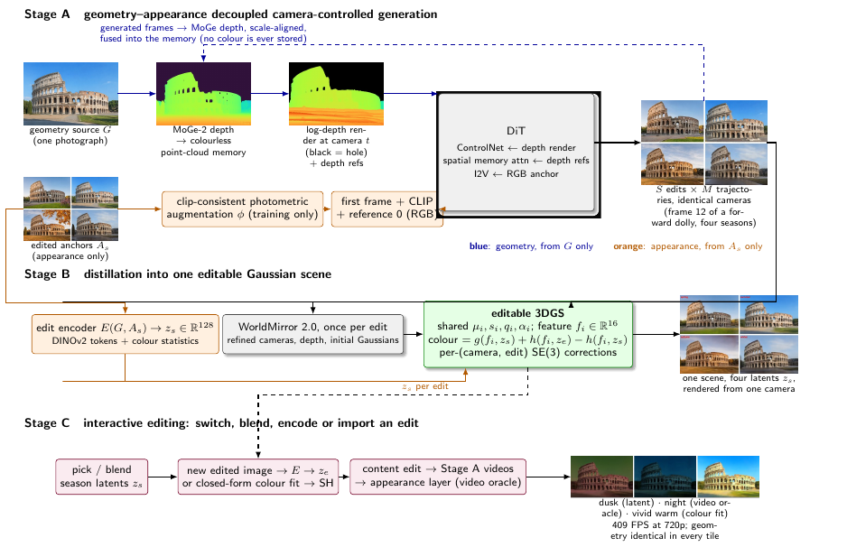
Overview. Blue: geometry, always from the source photograph (depth only). Orange: appearance, from one edited image. Green: the 3D asset shared by all edits. Stage A generates the observations, Stage B distils them, Stage C edits them interactively.
Four seasons · one geometry · synchronised cameras
Same depth renderings, four appearance anchors
Each grid plays the four seasonal videos of one trajectory frame-synchronised. Geometry always comes from the summer photograph; the four reference images (row above each grid) are only the appearance anchors. 720p, 21 keyframes, model at 2050 training steps.
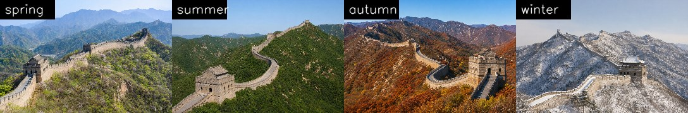
Great Wall · forward dolly (0.35 × subject depth)Colosseum · orbit right 30°
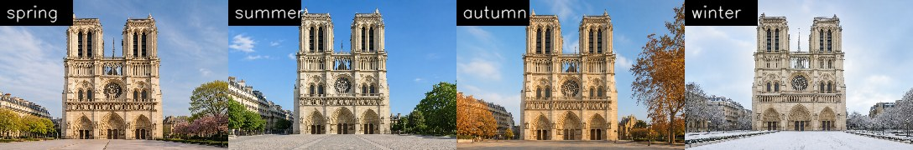
Notre-Dame · pan right 20°
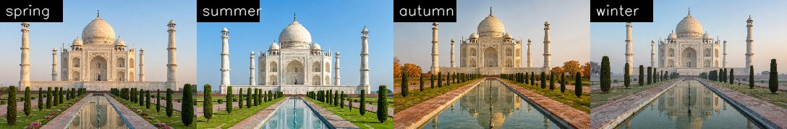
Taj Mahal · rise
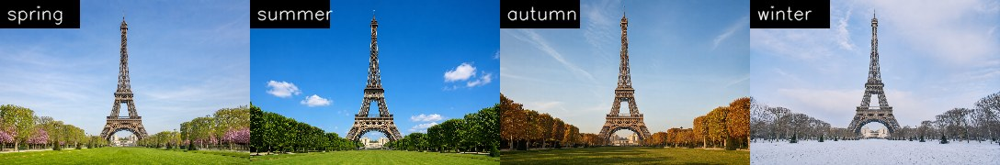
Eiffel Tower · elliptical loop
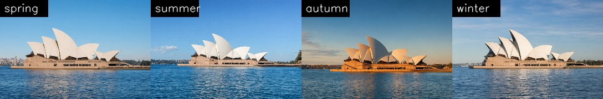
Sydney Opera House · orbit left 30°
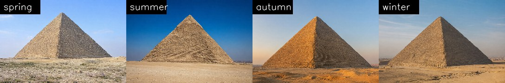
Great Pyramid · truck left (0.25 × subject depth)Colosseum · forward dollyGreat Wall · orbit right 30°
Stage B · C — one editable Gaussian scene
Distil the videos into a scene you can re-colour in real time
Every season's videos follow the same cameras, so all of them are observations of one geometry. We fit a single 3D Gaussian splat whose positions, scales, rotations and opacities are shared by all seasons; every Gaussian carries a 16-d appearance feature f, and a small network g(f, z) turns it into colour for the current edit latent z. An edit encoder E(A, B) predicts z from the source photograph and its edited version, so switching season is switching z, and a brand-new edited image is a brand-new z — no re-fitting.
Generated videos follow the nominal cameras only approximately, and each season deviates differently (0.4–2 m). Refining the cameras per season with WorldMirror 2.0 and learning a pose correction per (camera, season) during fitting is worth +0.4–1.5 dB and up to +29% sharpness; it is the single most important step, and it tells us what limits sharpness: not the splat, but the mutual consistency of the generated views.
Three routes cover edits the scene was never fitted to: the encoder latent (photometric edits at 0.8–1.0 of their strength once the encoder sees explicit colour statistics), a closed-form colour transform fitted on the anchor view and baked into the spherical harmonics (exact, seconds), and the video oracle: a content edit such as a night scene with lit windows goes back through Stage A and becomes an additional appearance layer on the frozen geometry. Everything renders at 409 frames per second (0.74M Gaussians, 1088×720, one H20); switching the edit costs 9 ms.
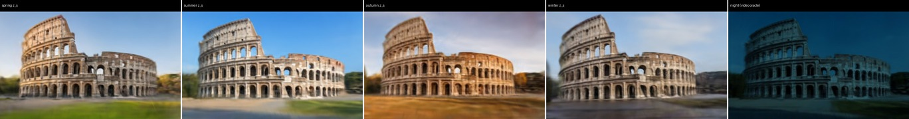
One Colosseum scene, one training camera. The four fitted season latents and a video-oracle night layer.
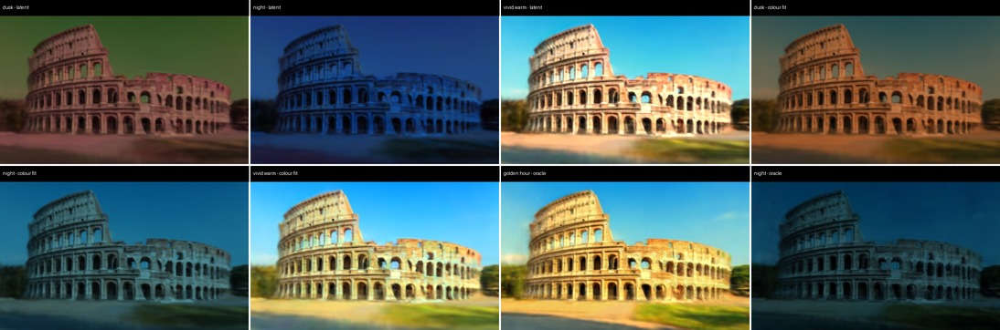
Unseen edits. Top: encoder latent (dusk, night, vivid warm) and golden hour from the video oracle. Bottom: the same edits through the closed-form colour fit, and night from the oracle.
Scene (210 cameras × 4 seasons, 720p videos)
PSNR, cameras refined once
PSNR, per-season cameras
Sharpness ratio
Colosseum
18.48
19.76
0.46 → 0.56
Eiffel Tower
20.02
21.47
0.34 → 0.44
Notre-Dame
17.93
18.28
0.43 → 0.46
Great Wall
19.39
20.15
0.25 → 0.30
Great Pyramid
—
24.50
0.32
Sydney Opera House
—
22.18
0.38
Taj Mahal
—
19.11
0.37
Sydney Opera House, gentle paths (motion 0.2, no dolly)
22.18 (10 paths)
24.19
0.38 → 0.45
Taj Mahal, gentle paths (motion 0.2, no dolly)
19.11 (10 paths)
19.47
0.37 → 0.45
Sphinx, gentle paths (motion 0.2, no dolly)
23.72 (motion 0.4)
24.83
0.39 → 0.50
What limits the scenes is the generation side: hallucinated regions differ between trajectories and blur when fused. Adding larger-motion trajectories makes it worse (315 cameras: −1 dB); gentle, subject-scaled paths make it better (Sphinx +1.1 dB / +27% sharpness, Sydney +2.0 dB / +19%, Taj Mahal +0.4 dB / +20%). Fitting-side counter-measures give a few percent.
What the model sees
The geometry channel carries no colour
Left: the condition image fed to the ControlNet branch — the point cloud rendered as normalised log depth (v = clip(−log₂(z/s)/4, −1, 1), s = median depth of the source view; black = no point along the ray). Right: the generated frames. Where the rendering thins out the model completes the scene from the anchor and its memory.
Great Wall, forward dolly. Depth render (turbo colour map) and generated video, frame-synchronised.
Depth encoding
Why log depth
Normalised inverse depth spends most of its range on the nearest metres and maps the landmark and everything behind it to a narrow band; the ControlNet then receives almost no signal about the tower, the ridges or the skyline. Four octaves of log depth around the source's median give the far field the same contrast as the foreground.
Left to right: photograph, inverse depth / 95th percentile, log depth (ours). Black: sky / invalid.
81 frames · four chained segments
All the way around
The backbone generates 21 keyframes per clip, so longer paths are chained: each segment starts from the last generated frame of the previous one while the anchor stays the appearance reference and the point-cloud memory accumulates. The orbit is centred at the facade depth plus the building's estimated half-width, so the camera stays outside and the loop closes.
Open-loop chaining has two failure modes we report rather than hide: a segment whose start frame is already tilted drifts further (a few orbits end in an aerial view), and a fixed circle passes through obstacles such as tree rows. Both are path-planning and re-anchoring problems, not conditioning problems.
General edits · add · remove · replace · modify
Any edit of the photograph becomes an edit of the scene
Seasons are only the benchmark. Here the reference photograph of each landmark is edited with an instruction-following image editor (gpt-image-2) under a strict viewpoint-preservation instruction: objects are added (balloon, crowd, fountain, banners) or removed (trees, people), regions are replaced (ground → water or sand, sky → storm) and materials, lighting, weather and style are modified (marble, ivy, night, golden hour, snow, fog, rain, cyberpunk, oil painting). Geometry always comes from the un-edited photograph; the edited image is only the appearance anchor. 126 clips below, all along the same orbit path, so every landmark's edits share their cameras frame by frame.
Grids play nine synchronised videos (top-left: no edit). In the browse-all rows the edited photograph stays on the left while the generated orbit plays on the right; videos load when scrolled into view. Hard cases are visible too: objects that are not in the source geometry (a balloon) are placed from the anchor alone and can drift in depth, and on the Colosseum orbit a few edits hallucinate a foreground tree or pole.
Great Pyramid
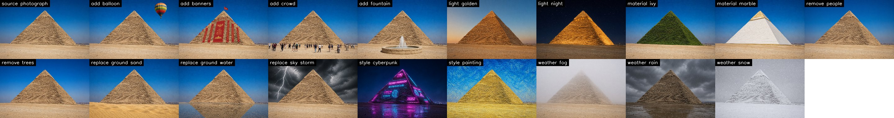
Edited photographs (top-left: source). All keep the viewpoint of the source; they are the appearance anchors of the clips below.Nine synchronised clips, same cameras. Top-left: no edit; then add balloon, add banners, remove trees, replace ground with water, ivy, night, snow, cyberpunk.browse all edits of this landmark
add balloon · add · Add a large colourful hot-air balloon floating in the sky above the building.add banners · add · Hang large red festival banners and flags on the facade of the building.add crowd · add · Add a crowd of tourists walking on the ground in front of the building.add fountain · add · Add a round stone fountain with splashing water in the foreground.light golden · modify · Make it golden hour: low warm sun from the left, long shadows, orange glow on the facade.light night · modify · Make it night: dark blue sky with stars, the building floodlit in warm orange light, windows and arches glowing.material ivy · modify · Cover the building densely with green ivy and moss, as if abandoned for centuries.material marble · modify · Turn the building's stone into polished white marble with gold trim.remove people · remove · Remove every person, vehicle, fence and sign from the scene, leaving the empty ground.remove trees · remove · Remove all trees and bushes; show what is behind them (sky, ground, distant buildings).replace ground sand · replace · Replace the ground, grass and pavement with golden desert sand dunes.replace ground water · replace · Replace the ground and grass in front of the building with a calm, shallow reflecting pool that mirrors the building.replace sky storm · replace · Replace the sky with dark dramatic storm clouds and a lightning bolt.style cyberpunk · modify · Make it a cyberpunk night scene: neon signs in magenta and cyan on the building, holographic advertisements, wet street.style painting · modify · Render the scene as a Van Gogh style oil painting with thick swirling brush strokes.weather fog · modify · Make it a thick foggy morning: the distant parts of the scene fade into grey mist.weather rain · modify · Make it a rainy day: wet reflective ground, puddles, dark overcast sky.weather snow · modify · Make it a heavy winter snowfall: snow covering the ground, roofs and trees, falling snowflakes, overcast sky.
Eiffel Tower
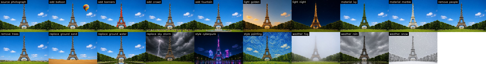
Edited photographs (top-left: source). All keep the viewpoint of the source; they are the appearance anchors of the clips below.Nine synchronised clips, same cameras. Top-left: no edit; then add balloon, add banners, remove trees, replace ground with water, ivy, night, snow, cyberpunk.browse all edits of this landmark
add balloon · add · Add a large colourful hot-air balloon floating in the sky above the building.add banners · add · Hang large red festival banners and flags on the facade of the building.add crowd · add · Add a crowd of tourists walking on the ground in front of the building.add fountain · add · Add a round stone fountain with splashing water in the foreground.light golden · modify · Make it golden hour: low warm sun from the left, long shadows, orange glow on the facade.light night · modify · Make it night: dark blue sky with stars, the building floodlit in warm orange light, windows and arches glowing.material ivy · modify · Cover the building densely with green ivy and moss, as if abandoned for centuries.material marble · modify · Turn the building's stone into polished white marble with gold trim.remove people · remove · Remove every person, vehicle, fence and sign from the scene, leaving the empty ground.remove trees · remove · Remove all trees and bushes; show what is behind them (sky, ground, distant buildings).replace ground sand · replace · Replace the ground, grass and pavement with golden desert sand dunes.replace ground water · replace · Replace the ground and grass in front of the building with a calm, shallow reflecting pool that mirrors the building.replace sky storm · replace · Replace the sky with dark dramatic storm clouds and a lightning bolt.style cyberpunk · modify · Make it a cyberpunk night scene: neon signs in magenta and cyan on the building, holographic advertisements, wet street.style painting · modify · Render the scene as a Van Gogh style oil painting with thick swirling brush strokes.weather fog · modify · Make it a thick foggy morning: the distant parts of the scene fade into grey mist.weather rain · modify · Make it a rainy day: wet reflective ground, puddles, dark overcast sky.weather snow · modify · Make it a heavy winter snowfall: snow covering the ground, roofs and trees, falling snowflakes, overcast sky.
Notre-Dame
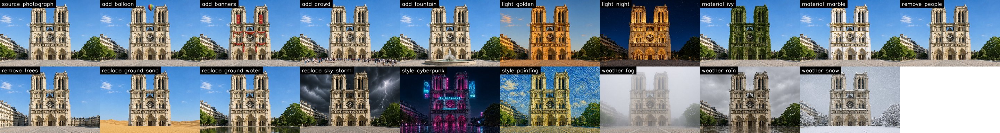
Edited photographs (top-left: source). All keep the viewpoint of the source; they are the appearance anchors of the clips below.Nine synchronised clips, same cameras. Top-left: no edit; then add balloon, add banners, remove trees, replace ground with water, ivy, night, snow, cyberpunk.browse all edits of this landmark
add balloon · add · Add a large colourful hot-air balloon floating in the sky above the building.add banners · add · Hang large red festival banners and flags on the facade of the building.add crowd · add · Add a crowd of tourists walking on the ground in front of the building.add fountain · add · Add a round stone fountain with splashing water in the foreground.light golden · modify · Make it golden hour: low warm sun from the left, long shadows, orange glow on the facade.light night · modify · Make it night: dark blue sky with stars, the building floodlit in warm orange light, windows and arches glowing.material ivy · modify · Cover the building densely with green ivy and moss, as if abandoned for centuries.material marble · modify · Turn the building's stone into polished white marble with gold trim.remove people · remove · Remove every person, vehicle, fence and sign from the scene, leaving the empty ground.remove trees · remove · Remove all trees and bushes; show what is behind them (sky, ground, distant buildings).replace ground sand · replace · Replace the ground, grass and pavement with golden desert sand dunes.replace ground water · replace · Replace the ground and grass in front of the building with a calm, shallow reflecting pool that mirrors the building.replace sky storm · replace · Replace the sky with dark dramatic storm clouds and a lightning bolt.style cyberpunk · modify · Make it a cyberpunk night scene: neon signs in magenta and cyan on the building, holographic advertisements, wet street.style painting · modify · Render the scene as a Van Gogh style oil painting with thick swirling brush strokes.weather fog · modify · Make it a thick foggy morning: the distant parts of the scene fade into grey mist.weather rain · modify · Make it a rainy day: wet reflective ground, puddles, dark overcast sky.weather snow · modify · Make it a heavy winter snowfall: snow covering the ground, roofs and trees, falling snowflakes, overcast sky.
Taj Mahal
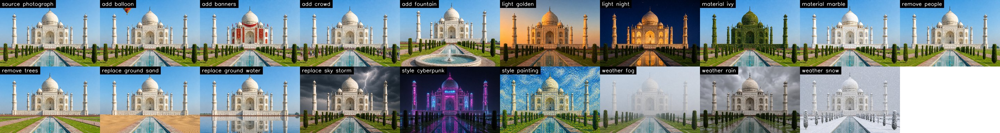
Edited photographs (top-left: source). All keep the viewpoint of the source; they are the appearance anchors of the clips below.Nine synchronised clips, same cameras. Top-left: no edit; then add balloon, add banners, remove trees, replace ground with water, ivy, night, snow, cyberpunk.browse all edits of this landmark
add balloon · add · Add a large colourful hot-air balloon floating in the sky above the building.add banners · add · Hang large red festival banners and flags on the facade of the building.add crowd · add · Add a crowd of tourists walking on the ground in front of the building.add fountain · add · Add a round stone fountain with splashing water in the foreground.light golden · modify · Make it golden hour: low warm sun from the left, long shadows, orange glow on the facade.light night · modify · Make it night: dark blue sky with stars, the building floodlit in warm orange light, windows and arches glowing.material ivy · modify · Cover the building densely with green ivy and moss, as if abandoned for centuries.material marble · modify · Turn the building's stone into polished white marble with gold trim.remove people · remove · Remove every person, vehicle, fence and sign from the scene, leaving the empty ground.remove trees · remove · Remove all trees and bushes; show what is behind them (sky, ground, distant buildings).replace ground sand · replace · Replace the ground, grass and pavement with golden desert sand dunes.replace ground water · replace · Replace the ground and grass in front of the building with a calm, shallow reflecting pool that mirrors the building.replace sky storm · replace · Replace the sky with dark dramatic storm clouds and a lightning bolt.style cyberpunk · modify · Make it a cyberpunk night scene: neon signs in magenta and cyan on the building, holographic advertisements, wet street.style painting · modify · Render the scene as a Van Gogh style oil painting with thick swirling brush strokes.weather fog · modify · Make it a thick foggy morning: the distant parts of the scene fade into grey mist.weather rain · modify · Make it a rainy day: wet reflective ground, puddles, dark overcast sky.weather snow · modify · Make it a heavy winter snowfall: snow covering the ground, roofs and trees, falling snowflakes, overcast sky.
Colosseum
Edited photographs (top-left: source). All keep the viewpoint of the source; they are the appearance anchors of the clips below.Nine synchronised clips, same cameras. Top-left: no edit; then add balloon, add banners, remove trees, replace ground with water, ivy, night, snow, cyberpunk.browse all edits of this landmark
add balloon · add · Add a large colourful hot-air balloon floating in the sky above the building.add banners · add · Hang large red festival banners and flags on the facade of the building.add crowd · add · Add a crowd of tourists walking on the ground in front of the building.add fountain · add · Add a round stone fountain with splashing water in the foreground.light golden · modify · Make it golden hour: low warm sun from the left, long shadows, orange glow on the facade.light night · modify · Make it night: dark blue sky with stars, the building floodlit in warm orange light, windows and arches glowing.material ivy · modify · Cover the building densely with green ivy and moss, as if abandoned for centuries.material marble · modify · Turn the building's stone into polished white marble with gold trim.remove people · remove · Remove every person, vehicle, fence and sign from the scene, leaving the empty ground.remove trees · remove · Remove all trees and bushes; show what is behind them (sky, ground, distant buildings).replace ground sand · replace · Replace the ground, grass and pavement with golden desert sand dunes.replace ground water · replace · Replace the ground and grass in front of the building with a calm, shallow reflecting pool that mirrors the building.replace sky storm · replace · Replace the sky with dark dramatic storm clouds and a lightning bolt.style cyberpunk · modify · Make it a cyberpunk night scene: neon signs in magenta and cyan on the building, holographic advertisements, wet street.style painting · modify · Render the scene as a Van Gogh style oil painting with thick swirling brush strokes.weather fog · modify · Make it a thick foggy morning: the distant parts of the scene fade into grey mist.weather rain · modify · Make it a rainy day: wet reflective ground, puddles, dark overcast sky.weather snow · modify · Make it a heavy winter snowfall: snow covering the ground, roofs and trees, falling snowflakes, overcast sky.
Great Wall
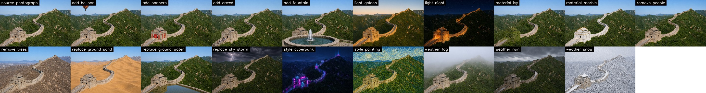
Edited photographs (top-left: source). All keep the viewpoint of the source; they are the appearance anchors of the clips below.Nine synchronised clips, same cameras. Top-left: no edit; then add balloon, add banners, remove trees, replace ground with water, ivy, night, snow, cyberpunk.browse all edits of this landmark
add balloon · add · Add a large colourful hot-air balloon floating in the sky above the building.add banners · add · Hang large red festival banners and flags on the facade of the building.add crowd · add · Add a crowd of tourists walking on the ground in front of the building.add fountain · add · Add a round stone fountain with splashing water in the foreground.light golden · modify · Make it golden hour: low warm sun from the left, long shadows, orange glow on the facade.light night · modify · Make it night: dark blue sky with stars, the building floodlit in warm orange light, windows and arches glowing.material ivy · modify · Cover the building densely with green ivy and moss, as if abandoned for centuries.material marble · modify · Turn the building's stone into polished white marble with gold trim.remove people · remove · Remove every person, vehicle, fence and sign from the scene, leaving the empty ground.remove trees · remove · Remove all trees and bushes; show what is behind them (sky, ground, distant buildings).replace ground sand · replace · Replace the ground, grass and pavement with golden desert sand dunes.replace ground water · replace · Replace the ground and grass in front of the building with a calm, shallow reflecting pool that mirrors the building.replace sky storm · replace · Replace the sky with dark dramatic storm clouds and a lightning bolt.style cyberpunk · modify · Make it a cyberpunk night scene: neon signs in magenta and cyan on the building, holographic advertisements, wet street.style painting · modify · Render the scene as a Van Gogh style oil painting with thick swirling brush strokes.weather fog · modify · Make it a thick foggy morning: the distant parts of the scene fade into grey mist.weather rain · modify · Make it a rainy day: wet reflective ground, puddles, dark overcast sky.weather snow · modify · Make it a heavy winter snowfall: snow covering the ground, roofs and trees, falling snowflakes, overcast sky.
Sydney Opera House
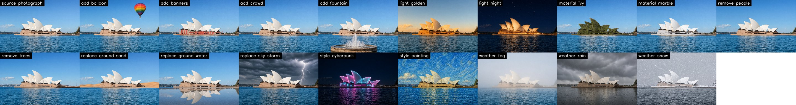
Edited photographs (top-left: source). All keep the viewpoint of the source; they are the appearance anchors of the clips below.Nine synchronised clips, same cameras. Top-left: no edit; then add balloon, add banners, remove trees, replace ground with water, ivy, night, snow, cyberpunk.browse all edits of this landmark
add balloon · add · Add a large colourful hot-air balloon floating in the sky above the building.add banners · add · Hang large red festival banners and flags on the facade of the building.add crowd · add · Add a crowd of tourists walking on the ground in front of the building.add fountain · add · Add a round stone fountain with splashing water in the foreground.light golden · modify · Make it golden hour: low warm sun from the left, long shadows, orange glow on the facade.light night · modify · Make it night: dark blue sky with stars, the building floodlit in warm orange light, windows and arches glowing.material ivy · modify · Cover the building densely with green ivy and moss, as if abandoned for centuries.material marble · modify · Turn the building's stone into polished white marble with gold trim.remove people · remove · Remove every person, vehicle, fence and sign from the scene, leaving the empty ground.remove trees · remove · Remove all trees and bushes; show what is behind them (sky, ground, distant buildings).replace ground sand · replace · Replace the ground, grass and pavement with golden desert sand dunes.replace ground water · replace · Replace the ground and grass in front of the building with a calm, shallow reflecting pool that mirrors the building.replace sky storm · replace · Replace the sky with dark dramatic storm clouds and a lightning bolt.style cyberpunk · modify · Make it a cyberpunk night scene: neon signs in magenta and cyan on the building, holographic advertisements, wet street.style painting · modify · Render the scene as a Van Gogh style oil painting with thick swirling brush strokes.weather fog · modify · Make it a thick foggy morning: the distant parts of the scene fade into grey mist.weather rain · modify · Make it a rainy day: wet reflective ground, puddles, dark overcast sky.weather snow · modify · Make it a heavy winter snowfall: snow covering the ground, roofs and trees, falling snowflakes, overcast sky.
One Gaussian scene, twenty-two appearances
The four seasons and the eighteen edits of the Colosseum, all generated along the same camera paths, are distilled into one editable Gaussian scene with the unchanged Stage B recipe: shared geometry, one 16-d feature per Gaussian and one latent per appearance (22 appearances × 84 cameras here; mean PSNR 18.7 dB against the generated frames). Every tile below is the same splat rendered from the same camera path with a different latent; switching costs one 9 ms evaluation of the colour network. Photometric, material and weather edits transfer cleanly; edits that add or remove content (balloon, crowd, fountain, trees) are limited by the shared geometry and blur, which is exactly where a geometry edit would be needed.
One splat, 22 latents, one orbit. Geometry is identical in every tile.
Benchmark
Seven landmarks × four seasons × ten trajectories
280 videos at 720p. Motion is the mean grey-level change between frame 10 and frame 0 (a static video that copies the anchor scores below 10). Edge IoU compares the structure of each seasonal video with the summer video of the same trajectory. Saturation and value are the ratios between the generated frames and the reference image (1 = exact).
Landmark
Motion median (min)
Edge IoU mean (min)
Saturation
Value
Colosseum
31.1 (20.4)
0.58 (0.42)
0.96
0.99
Eiffel Tower
18.0 (10.5)
0.49 (0.32)
0.97
0.98
Great Pyramid
18.1 (10.2)
0.40 (0.15)
0.99
0.99
Great Wall
33.0 (20.8)
0.65 (0.49)
0.97
0.99
Notre-Dame
31.9 (14.5)
0.59 (0.43)
1.01
0.99
Sydney Opera House
18.0 (12.4)
0.46 (0.21)
0.96
0.97
Taj Mahal
28.6 (14.1)
0.42 (0.31)
1.00
1.01
All 280 videos execute their camera path (minimum motion 10.2). Structural agreement across seasons is highest on richly textured scenes and lowest on desert and water, where monocular depth is least reliable. A comparison against RGB point-cloud conditioning and against depth conditioning without appearance training is reported in the paper.